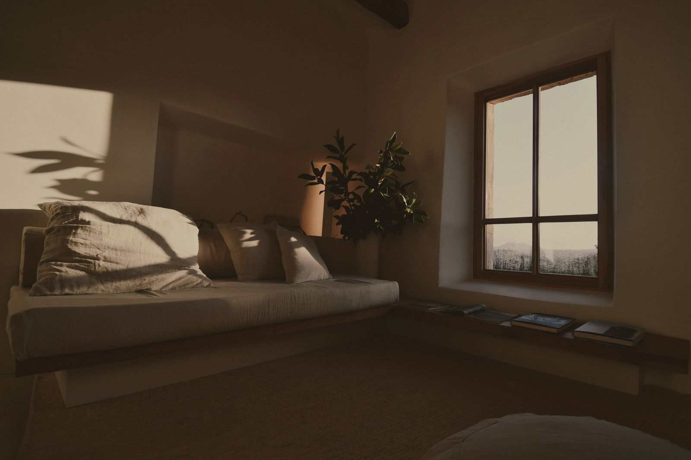
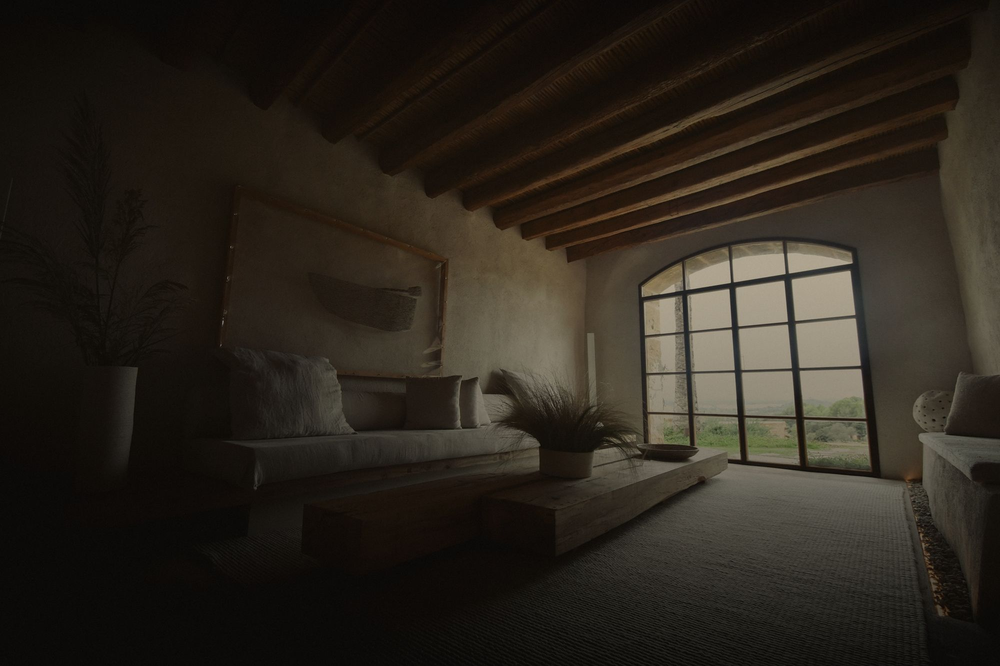
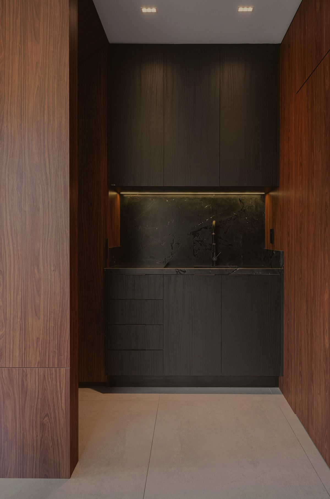
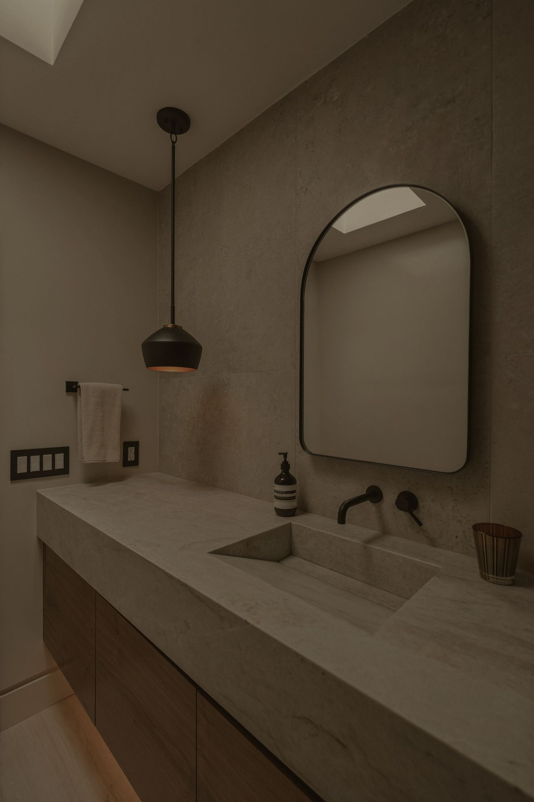
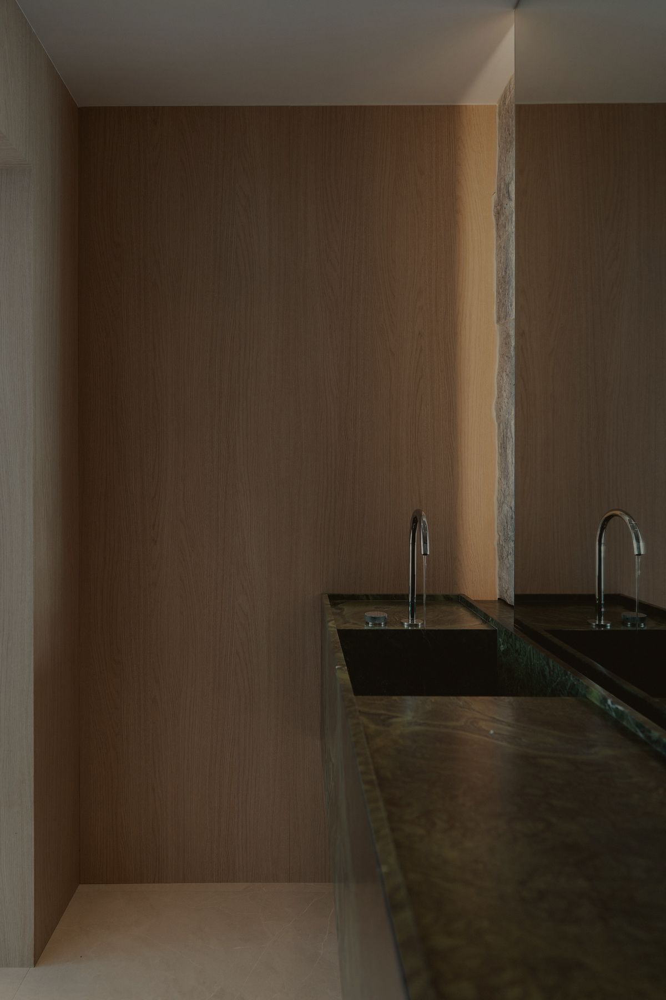
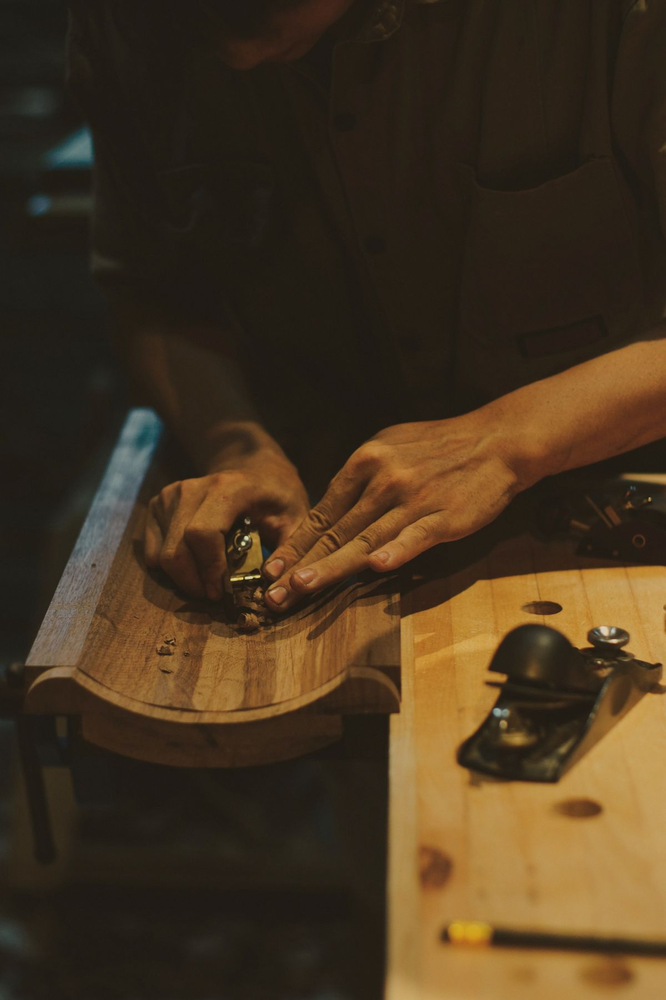
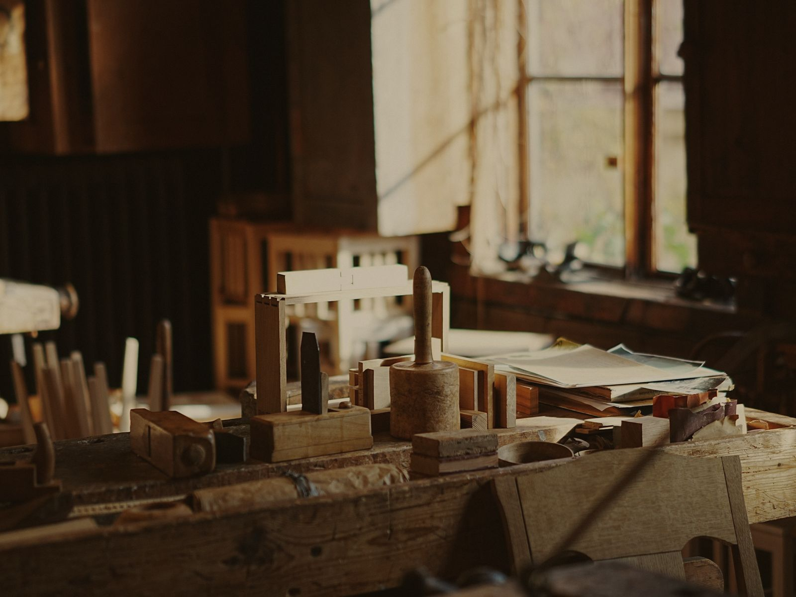

Woonhuis Oisterwijk
Een boerderij uit 1932, verbouwd tot woonhuis. De balken bleven; daaronder kwamen een travertin vloer, een zitbank langs de hele wand en een salontafel uit twee balken eiken.

Bekijk projectenWoonhuis Oisterwijk, 2025
Woonhuis Oisterwijk, 2025
Zitbank en salontafel in massief eiken
Het atelier
Atelier Dorr ontwerpt en maakt interieurs voor woonhuizen, appartementen en een enkele winkel. Ontwerpers en meubelmakers werken onder één dak, aan de westkant van Tilburg.
Wij werken met weinig materialen en kennen ze goed: Europees eiken, noten, travertin en Belgisch hardsteen. Hout kopen we per stam in, zodat een kast, een tafel en een vloer uit hetzelfde hout kunnen komen.
Wie het ontwerp tekent, staat ook in de werkplaats. Zo blijven de lijnen kort: een detail dat op tekening niet klopt, lossen we op aan de werkbank, niet op de bouwplaats.
Indeling, materiaalplan en lichtplan, voor één ruimte of een heel huis. Ook als u zelf een aannemer heeft.
Ontworpen rond hoe u kookt. Fronten in massief hout of fineer, werkbladen in natuursteen.
Inbouwkasten, boekenwanden, lambrisering en schuifdeuren, passend gemaakt op de muren zoals ze zijn.
Meubels in eiken of noten met bladen en wasbakken uit één stuk steen, gezaagd op maat.
Tafels, banken en bedden, als enkel stuk of in een kleine serie.
Een greep uit het werk van de laatste jaren. Meer laten we graag zien in de werkplaats, met de tekeningen erbij.

Een boerderij uit 1932, verbouwd tot woonhuis. De balken bleven; daaronder kwamen een travertin vloer, een zitbank langs de hele wand en een salontafel uit twee balken eiken.


Twee wasbakken uit één blok groen marmer, tegen een wand van eiken fineer. De naden van het fineer lopen door in de deur ernaast.

| Jaar | Project | Plaats | Materiaal |
|---|---|---|---|
| 2023 | Appartement Spoorzone | Tilburg | gerookt eiken en Belgisch hardsteen |
| 2023 | Boekhandel aan de Piushaven | Tilburg | essen en terrazzo |
| 2022 | Bibliotheek en trap | Udenhout | eiken |
| 2022 | Keuken en bijkeuken | Vught | noten en travertin |
| 2021 | Woonboerderij | Moergestel | oud eiken en Belgisch hardsteen |

Aan de Hoevenseweg staat onze werkplaats van 700 m². Daar werken vier meubelmakers, met een eigen spuiterij en een droogruimte voor hout. Alles wat wij ontwerpen, maken we hier zelf.
Natuursteen laten we zagen bij een steenhouwerij in Soignies, waar we al vijftien jaar mee werken. Het plaatsen doen we weer zelf, met dezelfde mensen die het gemaakt hebben.

Van eerste bezoek tot plaatsing duurt een gemiddeld project vier tot zes maanden.
We komen bij u langs, bekijken de ruimte en horen hoe u er woont. We meten op en sturen daarna een voorstel met een richtprijs.
ongeveer 1,5 uur, kosteloosU krijgt plattegronden, aanzichten en details. Hout, steen en beslag kiest u in de werkplaats, met de monsters in de hand.
4 tot 6 wekenNa akkoord tekenen we alles uit op de millimeter en gaan de meubelmakers aan het werk. U bent welkom om tussendoor te komen kijken.
8 tot 12 wekenWij plaatsen en stellen af, steen en verlichting inbegrepen. Na een jaar komen we terug om alles na te lopen.
2 tot 5 dagenDe meeste projecten beginnen met een telefoontje of een korte mail met een paar foto's van de ruimte. Daarna spreken we af, bij u thuis of hier aan de Hoevenseweg, waar u de materialen kunt zien en voelen.
studio@atelierdorr.nl